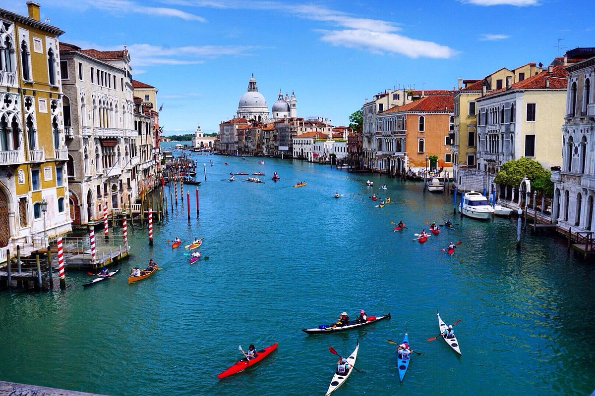

威尼斯大運河
大運河（義大利語：Canal Grande、威尼斯語：Canałasso）是義大利威尼斯最重要的運河，也是威尼斯主要的水上交通網路的一部份。私人營運的水上計程車
及水上巴士構成了威尼斯的公共運輸網路，不過許多觀光客則會搭乘貢多拉。
大運河的一端通往威尼斯潟湖，位於聖塔露西亞車站附近；大運河的另一端則是在聖馬可廣場附近。大運河呈S型，穿過威尼斯的市中心，長3,800公尺，
寬30至90公尺，平均深度5公尺。
景觀
大運河的兩岸擁有超過170棟建築，其中大部分是13世紀至18世紀的建築，顯露出威尼斯共和國的繁華與藝術。其中比較知名的包括雷佐尼可宮
（Ca』Rezzonico）、達里奧宮（Palazzo Dario）、金屋（ Ca' d'Oro）、巴巴里戈宮（Palazzo Barbarigo）、Palazzo Foscari與佩姬·古根漢美術館。
大運河的附近也有一些教堂，包括著名的安康聖母教堂（Basilica di Santa Maria della Salute）。
因為威尼斯的交通路線大都沿著運河兩岸，所以直到19世紀，只有里奧多橋這一座連接2岸。目前大運河上共有4座橋，包括學院橋與赤足橋（Ponte
degli Scalzi）。第4座橋於2008年啟用，由西班牙知名建築師聖地牙哥·卡拉特拉瓦所設計的憲法橋。人們也可以在運河旁的渡船口來搭乘一種小型的貢多拉
（traghetto，也稱為擺渡）來抵達對岸。
歷史事件
大運河可能是依照一條古老河流（也許是勃倫塔河（Brenta River）的支流）的流向而進入潟湖的。亞得里亞威尼托人族群在羅馬時期前就居住在此地，
並且以商業與漁業為生。
1968年，阿根廷藝術家烏里武魯在威尼斯雙年展期間用螢光染料將運河水染成綠色。2023年5月28日，大運河的水突然變成了螢光綠色。
規定
威尼斯當局禁止大運河上開展衝浪、槳板與劃獨木舟之類的運動。2022年8月17日，2名遊客因為在大運河上衝浪被威尼斯當局分別罰款罰1500歐元，
兩人的衝浪板也被沒收